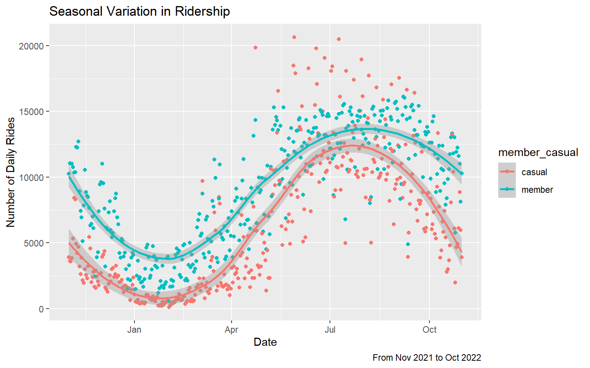
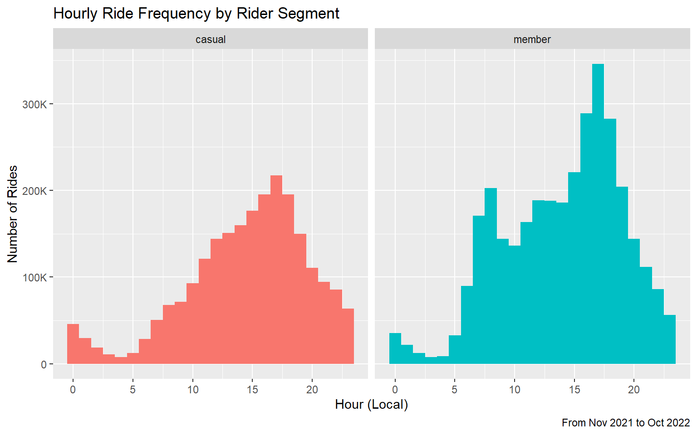

1. Executive summary
This analysis examines the usage characteristics of casual riders compared to annual members in order to develop marketing strategies that convert casual riders into annual members. Cyclistic’s finance analysts have concluded that annual members are much more profitable than casual riders. Cyclistic believes that maximizing the number of annual members will be key to future growth. This analysis concludes that casual riders are more likely than members to ride on evenings, weekends, and warmer months, to use electric bikes, and take longer rides. Recommendations drawn from the data include: transactional e-mails for casual riders to see the lower trip price for members, a digital campaign highlighting events and activities accessible via Cyclistic bikes, and a digital campaign to expand user awareness of comfortable cycling paths and related points of interest.
2. Data preparation
Cyclistic provided a month by month record of all past trips. For this analysis, data from November 2021 to October 2022 will be analyzed. Trip data was obtained directly from Divvy Bikes. This data is owned by the City of Chicago and is provided to the public according to the Divvy Data License Agreement.
There are roughly 100,000 - 500,000 trip records in each month’s CSV file. Due to the size of the data files, R Studio Desktop was used to clean and process the data. This structured data is automatically generated from each trip, and consequentially has very low possibility of human bias or error. The trip data is anonymized, and contains no identifiable user information.
The twelve monthly CSV data sets were merged into one R data frame. Trips with a duration less than 60 seconds were omitted from the analysis. According to the data source, trips below 60 seconds should be omitted due to the likelihood that it represents “potential false starts or users trying to re-dock a bike to ensure it was secure.” One record was identified as a test, and was omitted from analysis. Records with trip durations greater than 24 hours were omitted A detailed description of the data cleaning process is documented under “Data Cleaning Process”
The data cleaning process identified a significant number of null values in station name and station ID. These records were observed to have rounded values for starting and ending latitude and longitudes, which would be consistent with protecting identifiable user information. A search of publicly available information found that in 2020, Divvy began introducing dockless bikes as part of their system. As a dockless ride would not need to start or end at a station, and there were no other indications for dockless rides, it was inferred that these missing values represented dockless rides. Additional analysis found that all rides with missing station names and station IDs, rides with null values for latitude or longitude, were omitted from the analysis.
The cleaned dataset was saved as an RDS file named “valid_rides.rds”.
3. Analysis
3.1 Seasonal variations in casual and member ridership

This scatter plot shows the relationship between each date in the data set, and the total number of trips by members and casual riders on each date. The trend line is calculated using LOESS (locally estimated scatter plot smoothing), and shows an approximation of a sinusoidal function.
The data shows maximum ridership in the warmer summer months, and minimum ridership in the colder winter months.
The data also shows a greater amount of variation for both members and casual riders in the summer months compared to the winter months.
The data reinforces the existing understanding that Cyclistic users are more likely to ride for pleasure, but 30% use them to commute, as commuters would continue to ride to work throughout the year. It suggests that casual riders are less likely to use Cyclistic to commute than members, using Cyclistic primarily for pleasure.
The increased intra-seasonal variation in the warm months could be due to fluctuations in weather or increased demand for events, which could be a topic for further analysis. It may be beneficial to prioritize marketing activities during the warmer months to engage with and convert a greater number of casual riders.
3.2 Casual and member ridership by day of week

The bar graph above shows the total number of rides taken by casual riders and members, broken down by day of the week. Casual riders are more active on the weekends, while members are more active on weekdays. This data shows again that casual riders are less likely than members to use Cyclistic to commute, and primarily use Cyclistic for pleasure.
3.3 Ridership by time of day

The histograms above show the number of rides for each hour of the day for casual riders and members. Both histograms show the lowest number of rides in the early morning, around 3:00 or 4:00 A.M., and the highest number of rides in the evening, around 5:00 P.M. The histogram for member rides shows a smaller, but distinct peak around 8:00 A.M.
3.4 Ride Duration

These histograms show the duration of each ride, grouped into segments of 3 minutes each. Both histograms show left skewness and a peak in the 3-6 minute range.
| member_casual | q1 | median | q3 | IQR | skewness |
|---|---|---|---|---|---|
| casual | 464s (~7.73 minutes) | 805s (~13.42 minutes) | 1474s (~24.57 minutes) | 1010s (~16.83 minutes) | 14.90331 |
| member | 319s (~5.32 minutes) | 541s (~9.02 minutes) | 930s (~15.5 minutes) | 611s (~10.18 minutes) | 28.89192 |
Because the data has numerous outliers, the median and interquartile range (IQR) are better measures of central tendency and spread.
The mean ride duration for casual riders is 264 seconds (4.4 minutes) greater than it is for members. The data shows that casual riders take longer trips in terms of time.
The IQR for casual riders is also greater than for members by 399 seconds (6.65 minutes), showing that there is a wider spread in the typical ride duration for casual riders. Casual riders are more varied in how long they ride during each trip.
3.5 Rideable Type

This bar graph shows the relative proportion of each rideable type for casual riders and members. The docked bike category is only present for casual riders, and based on publicly available information, may be synonymous with the classic bike category, as classic bikes must start from and return to a dock station.
- Casual riders take a larger percentage of their trips on electric bikes (53.9%) compared to members (48.5%).
This presents an opportunity for Cyclistic to highlight the discounted rates members pay for riding electric bikes when communicating with casual riders.
3.6 Top 10 stations for casual riders vs members
| station_name | member_trips |
|---|---|
| Kingsbury St & Kinzie St | 50263 |
| Clark St & Elm St | 44935 |
| Wells St & Concord Ln | 43740 |
| University Ave & 57th St | 40608 |
| Clinton St & Washington Blvd | 39706 |
| Ellis Ave & 60th St | 38823 |
| Clinton St & Madison St | 38601 |
| Wells St & Elm St | 37920 |
| Loomis St & Lexington St | 37311 |
| Broadway & Barry Ave | 35651 |
| station_name | casual_trips |
|---|---|
| Streeter Dr & Grand Ave | 116482 |
| DuSable Lake Shore Dr & Monroe St | 61479 |
| Millennium Park | 52232 |
| Michigan Ave & Oak St | 51118 |
| DuSable Lake Shore Dr & North Blvd | 49172 |
| Shedd Aquarium | 38526 |
| Theater on the Lake | 37657 |
| Wells St & Concord Ln | 31611 |
| Clark St & Armitage Ave | 27608 |
| Dusable Harbor | 27223 |
The tables above rank the top 10 stations (excluding dockless trips) for casual riders and members. The number of trips at each station is the combination of trips that started at and ended at that station.
Only one station appears on both lists, suggesting that casual riders and members may have distinct preferences for the stations where they choose to start and end their trips.
All stations listed are near the “Loop” (central business district) or along the shore of Lake Michigan.
4. Recommendations
4.1 Highlight the value of Cyclistic membership through transactional e-mails
Casual riders take bikes out for longer lengths of time compared to members. For members, the median ride was 9.02 minutes long, but for casual riders the median was 13.42 minutes. Each time a casual rider completes a trip, Cyclistic could email them with the details of their trip and a comparison showing how much they would have saved as a Cyclistic member for that specific ride. Cyclistic could also display the running total of how much the casual rider would have saved on their trips over the last 12 months, excluding the price of the membership. The email would display that information alongside a distinctive “Join Cyclistic” button which leads to the member sign up page.
The median duration trip for a casual rider would cost $3.38 on a classic bike, or $6.88 on an electric bike. For members, that same trip would be free on a classic bike, or $2.38 on an electric bike. As an example, the email might read, “You would have saved $4.50 with a Cyclistic membership. Over the last X number of rides, you would have saved $X. Join Cyclistic.” These emails could be analyzed using an A/B split test to measure their impact on membership purchase.
4.2 Promote Cyclistic as a way to access events and activities
Casual riders are most active during weekends and evenings in warmer months. The data suggests that casual riders generally use Cyclistic for leisure and recreation. Cyclistic can leverage this information to convert casual riders to members by promoting upcoming events and activities with information about which Cyclistic stations are nearest to the event. This informational campaign would include information about the benefits of Cyclistic membership, and a call to action to join. Cyclistic could possibly partner with events or venues to offer benefits to Cyclistic members, such as presale tickets or discounted access.
The informational campaign would include a weekly email to both members and casual riders, as well as posts on social media. The emails would follow a digest or newsletter format with event details as well as information about the nearest Cyclistic stations and calls to action for casual riders to purchase Cyclistic memberships. The social media component of this campaign would focus on one event per post. The posts would be visually focused, showing the event name, location, and nearest stations superimposed on top of an event specific photo or illustration. A text caption would reiterate key details, as well a call to action to join Cyclistic as a member through a link. The impact of this campaign could be measured by observing the number of recipients who click through and purchase a Cyclistic membership.
4.3 Raise Awareness of Cycling Infrastructure
The heaviest concentration of Cyclistic trips are in the “Loop” and around the shore of Lake Michigan. These areas have a higher density of cycling infrastructure than most other areas of Chicago, as seen on this map. Cyclistic can highlight cycling infrastructure throughout the city through email and social media as a way of encouraging casual riders to use bike-share more often and become Cyclistic members.
The most common concern about bicycling among adults in the United States is being hit by a motor vehicle while riding a bicycle, according to a 2018 study by Corona Insights performed for the nonprofit PeopleForBikes. Other studies on bike share programs have found that traffic safety concerns are among the top barriers to bike-share usage. (Franckle et al., 2020) Buffered and protected bike lanes have been demonstrated to increase the perception of comfort and safety, as well as the percent of individuals interested in bicycling on those paths. (McNeil et al., 2019) Creating content featuring buffered and protected bike lanes could encourage casual riders to use Cyclistic more often and join as members.
On a weekly or semi-monthly basis during the warmer months of May through October, Cyclistic could profile a different cycling lane or off-street trail. The profiles could include maps, photographs, short-form videos, quotes from riders sharing tips or things they like about the routes, as well as points of interest, and Cyclistic stations nearby. Each profile would be shared through email and social media channels. Calls to action to join Cyclistic as a member would be included in each post. Ridership at stations along the profiled route could be monitored and compared to historical averages to assess the impact of this campaign.